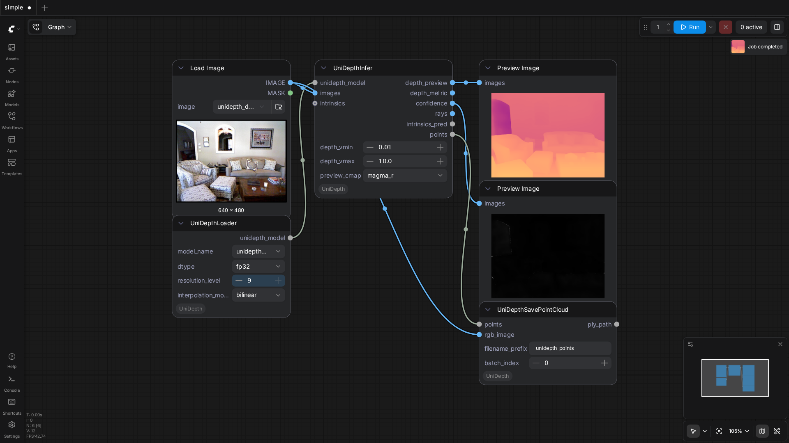
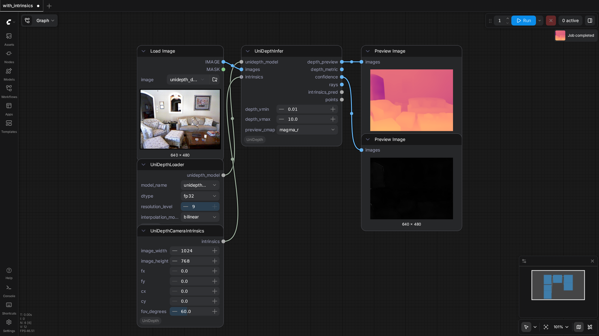

PozzettiAndrea/ComfyUI-UniDepth
Test Results
2026-05-18 20:02 UTC
Test run
Linux-6.8.0-107-generic-x86_64-with-glibc2.35
Intel(R) Xeon(R) CPU E5-2697 v4 @ 2.30GHz
NVIDIA GeForce RTX 3090
100.0%
2 passed
2/2 tests
Workflows
Grid
List

simple
pass
41.39s

with_intrinsics
pass
18.80s
Downloaded Models
3 files · 1.3 GB
models/unidepth/
HF: lpiccinelli/unidepth-v2-vitl14
1.3 GB
models--lpiccinelli--unidepth-v2-vitl14/blobs/ba73d3de735302ccc64a50f1e557122050c4b1893e6060b28dba05d6af3e67c6
1.3 GB
models--lpiccinelli--unidepth-v2-vitl14/blobs/f3243be215e91a135dfe99b54d0718473339b31b
3.8 KB
CACHEDIR.TAG
191.0 B
×
‹
›
0.0s / 0.0s
Resource Usage
RAM (GB)
VRAM (GB)